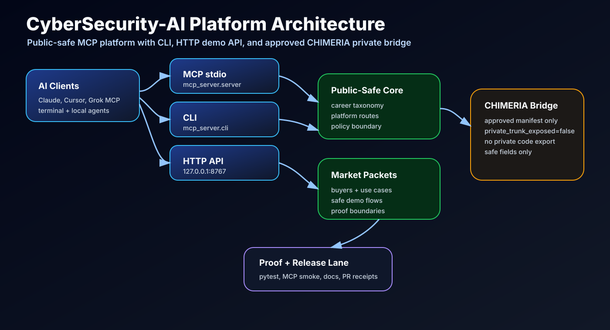

MCP
Tool surface for Claude Desktop, Cursor, Grok-compatible clients, and local agents.
MCP · CLI · HTTP · CHIMERIA Bridge
Public-safe cybersecurity intelligence for career mapping, SOC readiness, GRC workflows, IAM maturity, cloud security, AI product enablement, and approved private CHIMERIA bridge packets.
cybersecurity-ai-http --host 127.0.0.1 --port 8767
Open /platform, /use-cases, /capabilities, /demo, and /bridge.
Tool surface for Claude Desktop, Cursor, Grok-compatible clients, and local agents.
Operator packets for platform demos, buyer workflows, market scripts, and bridge checks.
Dependency-free local API for browser dashboards and integration pilots.
Approved-manifest bridge that protects the private trunk while enabling public-safe context.
Real use cases
Role packets, first-week plan, escalation checklist, analyst skill map.
Tabletop agenda, RACI map, evidence checklist, executive update packet.
Control-owner matrix, evidence plan, policy literacy brief, risk summary.
SSO, MFA, RBAC, PAM, lifecycle automation, access review roadmap.
Safe MCP security vocabulary and workflow layer for AI product teams.
Approved manifest packet, release boundary proof, no private trunk disclosure.

Operator script
python -m pip install -e . pytest
python -m pytest -q
cybersecurity-ai platform
cybersecurity-ai use-cases
cybersecurity-ai capabilities
cybersecurity-ai demo --use-case soc-onboarding-copilot
printf '{"jsonrpc":"2.0","id":1,"method":"tools/list","params":{}}\n' | python -m mcp_server.server